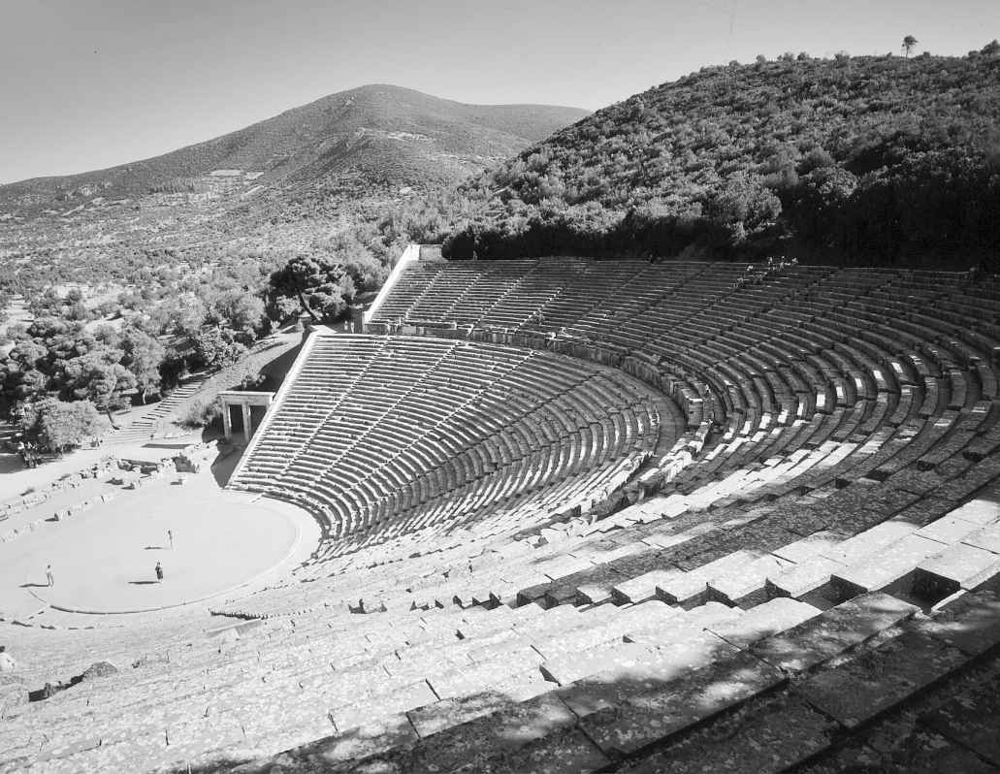
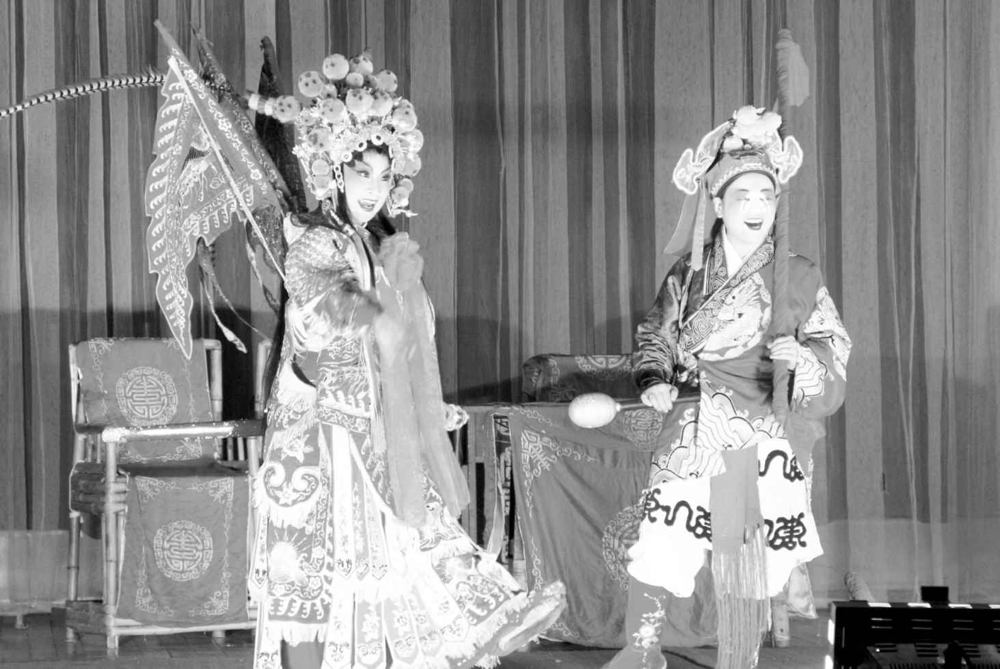

今日所称的戏剧起源可上溯至史前。戏剧建立在看似普世性的人类活动之上，关于哪些活动构成戏剧真正基础的探讨没完没了，迄今徒劳无果。最佳的答案可能是，人类的这些活动在不同的社区和文化中以无数不同的方式结合、发展起来，从而在现代世界中产生出丰富多彩的戏剧和与戏剧相关的形式。
模仿显然是这样的一种基础性活动。旧石器时代的岩画为人类这种古老的爱好提供了无可辩驳的证据。关于早期人类，我们所了解或可以推测的都表明，对模仿的着迷并不仅限于图像，它还作为一种具体的活动得到实施。可以肯定的是，如同旧石器时代岩画上所表现的那样，表演者在聚落内部扮演超自然物、动物，以及符号化的指标人物。讲故事是另一种发现于所有人类文化中的活动。文化神话是我们所知最古老的故事形式中的一种，它便是那些关于神明，关于世界与人类如何生成、人类如何与自身以及世界互动的故事。一般来说，讲述这类神话故事的人在社会中拥有特殊的地位，有时仅是艺人而已，但有时又是先知、导师和巫师。在模仿与讲故事之间总是存在着某种密切的关联。讲故事的一个重要部分便是，讲故事的人会假扮故事中各样不同的角色，并且还借用他们的声音说话。我们可以认为构建戏剧的材料跟构建故事的材料大致相同，但戏剧是全身的模仿性扮演，而不仅仅是一个人变着各样的腔调说话。
最为人们熟知的一个关于戏剧的基本公式是由理论家埃里克·本特利于1965年提出的“A扮演B而C在旁观。”“扮演”和“旁观”这两个动词是关键所在，前者强调的是积极主动的模仿，而后者强调的是观看。虽然简单，这个表达式却将舞蹈和讲故事这样紧密相关的形式区别开来了（它包含了一个重要的附带条件，即如果涉及“扮演”，舞蹈与讲故事二者皆属于戏剧范围内的活动）。当然，这个公式所假定的A、B和C三者都是人，这一点是确定无疑的，尽管实际情况中有一些戏是由人来扮演动物、昆虫、鸟、植物，甚至是没有生命的东西。
事实上，A不必是人，而且在世界上很多地方也并不是人。A可能是一件由人所操控的没有生命的物件，即木偶。木偶戏过去在西方通常被视为一种次要的戏剧形式，适合儿童观看或者作为简单的民间娱乐，但不值得严肃的戏剧研究者的重视。不过，随着木偶戏声望和知名度的提高以及技艺的日益精湛，随着西方世界的观众对于世界其他地方丰富的偶戏传统有了更多的认识，这种态度正在发生改变。也应该指出，本特利的戏剧定义涵盖了“模仿”与“观看”这两大要素，却将另一个重要的戏剧成分——讲故事——排除在外。鉴于此，我们应当将亚里士多德的见解补充进来，从而大致得出这样一个表达式“A模仿B表演一个行动 ，而C在观看。”
虽然某种形式的表演在世界各地的文化中已经具有普遍性，但相比较其他艺术形式，构成我们所认为的戏剧各个要素的特定组合却是非常有限的，尽管它在世界很多地方都已经发展出各种各样的组合方式。“戏剧”这个词及其概念植根于西方文化与习俗，因此，虽然本研究试图将戏剧这门艺术置于全球视野下进行考察，但首先必须承认这样的考察会限定于被西方传统任意划定的一些疆界内。譬如，戏剧和歌剧在西方传统内习惯上被视为本质上不同的形式，研究戏剧的关注文本，研究歌剧的则关注音乐，尽管两者之间有很多明显的重叠之处。虽然舞蹈不仅与戏剧密切相关，并且时常穿插进戏剧，但舞蹈在戏剧研究中大多被忽略了。因本书篇幅有限，我虽不情愿但大体上还得遵循西方的这一传统，但同时也承认，除非受到殖民主义的影响，世界上绝大多数地方都不理会这样的区别。我将在关于演剧与表演的章节中讨论这些以及相关的一些问题。
我基本上将以发生时间的先后来讨论我们称之为戏剧的形式在众多不同的世界文化中是如何发展起来的。很多戏剧史都是从古埃及的仪式开始讲起。关于古埃及仪式，我将在下一章讨论，兹不赘述。然而公元前5世纪的古希腊是最早充分地发展出我们称之为戏剧的艺术形式的文化，同时也是在这种艺术形式的观念先是传播到全欧洲，继而传播到世界其他地方的过程中发挥了至关重要作用的文化。关于希腊戏剧的起源，人们提出了很多不同的理论，而所有这些理论都受到了挑战，这是因为我们对那个时代的文化生活知之甚少，以至于无法明确地解答这个疑问。总之，到公元前5世纪中叶，随着作家创作剧本、演员穿戴戏服和戏剧表演手段等方面高度典章化的法规的制定，作为一种文化形式的戏剧已经完全确立起来。这种形式形成于雅典，然后外传到雅典各个殖民地。戏剧在古希腊的一些节庆中占据着重要的地位。庆典期间献演三类戏剧——悲剧、喜剧和羊人剧，竞逐各种荣誉和奖项。尽管我们对那时的表演风格知之甚少，但有很多表现演员的艺术作品告诉我们，他们都穿着考究的服装，戴着精致的面具。载歌载舞的合唱队是戏剧演出的一个重要特色表演。
古希腊和古罗马的剧场都是可以容纳大量观众的露天市政建筑。希腊每一座城市，无论大小，都有一座通常是依山而建的大型剧场，这些剧场的遗迹在希腊全境及其殖民地仍然可见。发掘出的遗址呈现的是为观众修筑的一条条石凳围成的一个个半圆形，缓缓地向下延伸至一块圆形的平地，即供合唱队表演的合唱队席。越过合唱队席是一座专为演员而修的建筑，叫“换装间/背景房”（skene），从中衍生出“布景”（scene）这个现代词语。起初，演员房前的地坪与合唱队席齐平，后来加高抬升至有些像现代的舞台。这个区域叫作“舞台前部”（proskenion），从中衍生出“台口/前台”（proscenium）这个用来表示环绕现代舞台的拱形建筑的现代术语（图1）。

图1 希腊埃皮达鲁斯剧场
尽管希腊戏剧创作的鼎盛时期仅限于公元前5世纪，戏剧却一直都是希腊人生活的一个重要部分。公元前4世纪，随着亚历山大大帝的远征，希腊的戏剧传统被带到更加遥远的地中海，甚至远及叙利亚和伊拉克。希腊化时代，虽然抬高的拱形建筑已很普遍，一些舞台也变得更加精致，有两层甚至三层，但剧场在形式上并没有发生根本的变化。古典时期创作的戏剧继续上演，然而古典时期阿里斯托芬富于幻想的喜剧在受欢迎的程度上让位于一种新派喜剧——这种新派喜剧降低了合唱队的作用，不再讽刺特定的活靶子，而是着意描写更加普通或类型化的人物。希腊化时期的学者将喜剧分成旧喜剧、中喜剧和新喜剧三种风格，旧派以阿里斯托芬和他同时代的剧作家为代表，中派体现为上述的种种变化，而新派则以一批公元前4世纪晚期和前3世纪的剧作家为代表，其中最著名的是米南德。
中喜剧没有一部幸存下来，但是20世纪中叶却发现了米南德创作的《恨世者》一剧的全本。新喜剧以聚焦于当时的市民生活为其典型特征。其基本情节结构和类型化人物为古罗马时期的重要喜剧作家普劳图斯和泰伦斯吸收利用，并通过他们，经由文艺复兴时期的剧作家传播到欧洲各地。结果是，这些类型化的人物和情节安排直到今天都依然是欧洲喜剧传统的一个重要因素。最常见的情节是一对遭遇挫折的恋人反抗冥顽不化的老一辈家族成员，并与荒诞怪异的潜在对手争斗，最终在众多仆人（有些聪敏，有些愚笨）的协助下取得幸福的大团圆结局。
如古罗马杰出的剧作家普劳图斯和泰伦斯的作品所表现的那样，罗马戏剧在诸多方面承袭希腊戏剧，照希腊人的做法将戏剧分为喜剧和悲剧（羊人剧其时已经完全消失）。尽管悲剧在罗马很受欢迎，但只有十部作品留存下来，这十部悲剧都是罗马帝国时代的作品，其中九部是斯多葛学派的哲学家塞涅卡的作品，剩下的一部《奥克塔维娅》为无名氏所作。华丽花哨的文体风格，以及偶或出现的令人厌恶的场景，使得很多戏剧史学家相信这些剧本从未上演过，仅仅是为人案头阅读而创作的。可事实上，它们都有一段体面的现代舞台演出史，而且在文艺复兴时期的悲剧作家中很有影响。罗马帝国晚期，文学性的戏剧衰落，取而代之的是马戏、角斗，以及像模拟海战的壮观表演（即海战表演），这些演出都是在像罗马圆形斗兽场这样巨大的公共空间中举办的。与戏剧传统多少要接近一些的是哑剧，演出常常伴有合唱和舞蹈，以及滑稽搞笑的演员表演的默剧。这些演员在某些方面承继了新喜剧中的人物特性和剧情，并且，如一些戏剧史学家所言，架起了一座通往文艺复兴时期街头即兴喜剧的桥梁。
尽管原本上演普劳图斯和泰伦斯剧作的剧场现在看上去只是相当简陋的平台，其后墙设有通往众多不同角色的房屋的门，但后来在从西班牙到中东的罗马帝国全境内都建有更加开阔的永久性剧场。这些剧场中最早且最大的一座，也是作为后建剧场模型的，便是大约在普劳图斯和泰伦斯的时代一百年后，建于公元前55年的庞培剧场。尽管以希腊剧场为样本，罗马剧场却具有独特的特征。罗马剧场是独立的建筑，而未筑进自然的山坡希腊式的合唱队席缩成一个半圆形，希腊风格的演员房也建得更大、更精致，其突出的侧翼与观众席相连从而构成一个浑然一体的单体建筑结构。这些意义及空间巨大的建筑遍布罗马每一座大大小小的城市，今天仍然是地中海周边以及北至英格兰的罗马考古遗址中最鲜明的特色建筑物。
随着基督教的崛起，大到剧场，小到玩世不恭和淫秽色情的流行默剧，都常常成为攻击的对象。可是从根本上终结西方帝国戏剧的却是公元5世纪北方入侵者的征服，尽管很多学者认为在随后的几个世纪中流散的演员继续传扬了帝国时期的一些戏剧传统。然而，公元330年，君士坦丁大帝重新修筑了拜占庭的东城，并立其为首都。罗马被占领后，罗马帝国的东部却作为拜占庭帝国又延续了一千年。像默剧、哑剧、街头艺人这样流行的古典形式，跟诸如角斗和战车赛这样场面壮观的表演一样，一直延续到拜占庭帝国。但是，尽管持续不断地在努力，历史学家仍旧没有发现任何确凿的证据证明，古典意义上的戏剧传统在拜占庭帝国有所延续。
戏剧在西方衰落，同时却在亚洲兴起。亚洲最早提及戏剧表演的是公元前2世纪的印度。公元前2世纪和公元2世纪间的印度产生了《舞论》（Natyasastra ）这部伟大的戏剧教科书。《舞论》在中亚戏剧中处于中心地位，其影响如同亚里士多德的《诗学》之于欧洲戏剧一样。但相比较《诗学》，《舞论》论及的范围要广得多，不仅涵盖了戏剧结构，还涉及动作身段、装扮服饰、舞台表演和剧场建筑。《舞论》所描写的表演场所较之古希腊和古罗马，远更近似于现代西方的观念。它给出了一座普通剧场的精确尺寸宽约五十英尺，长约一百英尺的长方形建筑。剧场被分割成两半，一半归观众，另一半归演员；演出空间则进一步分成舞台和后台空间。不像希腊和罗马的大型公共剧场，古印度的这些剧场由皇家宫廷资助，显然为社会精英所营建，最多可容纳五百人。
戏里用到各种各样的语言，但国王和神祇说的是宫廷语言——梵语，因此这个戏剧传统后来被称为梵剧。大约三百部梵剧作品幸存下来，其中大部分是公元2、3世纪的作品。这些戏剧作品基本上分为两类关于王公和神祇的英雄传说剧（Nataka）和关于中产阶级人物的生活风情剧（Prakarana）。梵剧中“英雄剧”和“生活剧”之间的区别相当于古希腊戏剧中悲剧和喜剧之间的区别，但除此之外，梵剧和希腊戏剧在其他地方几乎没有任何相似之处。有些戏剧史学家认为，亚历山大大帝——一位戏剧爱好者，或许在公元前327年入侵印度北部时曾把希腊戏剧带到那儿，可是没有直接的证据证明这一点，梵剧里面也没有什么证据可以支撑这一观点。梵剧和希腊戏剧不仅演出剧场完全不同，戏剧文本也迥然有别。梵剧篇幅长，情节错综复杂，调性多样混合。在这方面，梵剧与其说跟希腊戏剧相似，倒不如说更像莎士比亚戏剧。梵剧还无一例外地是以皆大欢喜或至少是冰释前嫌的和解方式终场，其剧情大部分都取材于《罗摩衍那》和《摩诃婆罗多》这两部伟大的印度史诗。
最著名的梵剧作家是迦梨陀娑，其创作年代很可能是公元4世纪，他的《沙恭达罗》还常在西方演出。梵剧最后一位杰出的剧作家是薄婆菩提，他生活于公元8世纪。在他之后，梵剧传统仍继续着，特别是在印度东北部，梵剧在那里得到11和12世纪的犀那王朝的大力支持。接下来，孟加拉成为梵剧的中心，在那里存续着一个伟大的戏剧传统，直到19世纪中叶孟加拉本土戏剧兴起。梵剧更广为人知的一个旁支与印度西南部喀拉拉邦的地方喜剧表演融合，形成了鸠提耶耽剧，传统上在印度神庙演出，至今不辍。鸠提耶耽剧是全由男性出演的哑剧，演员们穿着精心制作的戏服在音乐伴奏下连演数日。
中国的戏剧发展几乎跟印度的一样历史悠久。中国戏曲可追根溯源至公元3世纪的参军戏，并主要作为宫廷娱乐在随后的几个世纪里得到持续的发展，而中国已知最早的有组织的剧团直到公元8世纪才诞生。早在这之前，中国就已经出现了世界戏剧的另一个主要品种，那就是常常为西方戏剧史学家忽略的偶戏。在亚洲，偶戏的起源可以追溯到跟真人戏剧表演一样遥远的过去。公元前1世纪，当最早的梵剧在印度诞生之时，中国孕育出影戏艺术。亚洲一些地区将这种戏剧形式的起源归功于军事家张良。据记载，张良使用士兵形象的大型木偶防卫一座空无一卒的堡垒。然而，今日我们所称的皮影戏的首次明确记载则来自张良殁后的将近一个世纪，即大约公元前100年。那时，几部讲述汉代历史的著作提到皇帝为自己的宠妃李夫人的早逝而哀伤。为了抚慰他，他的一位方士许诺唤起李夫人的魂灵。以此，他创作了看来是世界上第一部皮影戏，惟妙惟肖地显出李夫人的身影，看得汉武帝出了神，于是他鼓励这种艺术的发展，然而结局却很不幸。几年后，即公元前96年，疑神疑鬼的汉武帝做了一场噩梦，梦到自己受到几个挥舞大棒的偶人攻击，于是下令开展一系列的调查，并处决一干艺人。
影戏这种艺术形式一经确立，便逐渐成为中国文化的一个重要部分。隋唐时期（581——906年），佛教僧侣和宣教师广泛地运用皮影戏宣传宗教训令，到了宋代（906——1279年），皮影戏已经成为一种颇受民众欢迎的街头娱乐形式。行游四方的流动戏班在临时搭建的剧场里表演皮影戏，由此出现了第一批演员公会组织。作为东南亚主要传统戏剧的“哇扬”皮影戏的最早记载出现在10世纪。尽管其传统题材取自印度史诗，很多人却认为这种戏剧形式本身是中国的舶来品。虽然制作皮影的材料不一，但本质上都是一样的——精心制作的二维人物形象提置于一方背光的半透明屏幕上。

图2 当代中国戏曲
几乎与皮影戏经历制度化的同时，曾一直作为宫廷娱乐形式的早期中国戏曲开始发展出各种流行的变体。唐玄宗（712——756年间在位）成立了专业演出戏曲的第一个国立剧团。这种戏剧形式此后稳步发展，新的剧种在中国各地涌现出来。中国戏曲强调音乐、舞蹈和排场，演唱也很重要。宋代出现了中国最早的戏曲形式，即南方的南戏和北方的杂剧。跟古典戏曲不一样，南戏和杂剧都是为大众创作的，使用各地的方言，叙事题材广泛，有史诗性的和家庭生活的，也有情爱浪漫和宗教性的，不一而足。南戏形式更加严谨，一部四折，每折一人主唱；而杂剧则允许各色人物上场演唱。 [4] 南戏的形式更为古老，据说是宋光宗在位时（1190——1194年间）产生的。杂剧形成较晚，是在今天北京的周边地区发展起来的。1280年，忽必烈治下的蒙古人实现了对中国的征服，并营建一座新城——大都（即今日北京的前身）作为首都。尽管好战，元朝的蒙古统治者对戏曲却大加鼓励，北方本土的杂剧也传播到南方。杂剧推出了一系列多种多样的类型化人物，叙事结构更加完整统一，从中产生出常常被称为中国最早的真正戏剧的元曲。存世的元代戏曲作品大约有两百部，它们题材广泛，涉及情爱、历史、公案和匪盗等。毫无疑问，最著名的元杂剧是《包待制智勘灰阑记》，由李潜夫于13世纪下半叶创作，贝尔托·布莱希特将之改写成《高加索灰阑记》，从而在现代赋予它新的生命。18世纪，伏尔泰在其《中国孤儿》一剧中也同样向西方展示了另一部元代杰出的戏剧作品——13世纪元代的剧作家纪君祥所创作的《赵氏孤儿》。
中世纪日本由世袭的军事独裁者即幕府将军统治。日本幕府时代始于1192年，幕府早期流行的艺能形式多种多样，但大多是舞蹈和杂技表演，而非叙事性表演。散乐是最受欢迎的表演形式之一，这种艺能可能早在8世纪就从中国传入日本。参与散乐表演的有变戏法的、玩杂技的、舞蹈唱念的和演哑剧的，形式上多少有点像是现代的马戏。1374年是日本戏剧史上一个重要的年份。这一年，足利义满将军观赏了一场由制作人观阿弥领衔主演的猿乐表演，将军对这场演出印象深刻，遂成为他们的赞助人。此后的四十年里，观阿弥和他的儿子世阿弥集理论家、演员和剧作家于一身，在室町幕府的支持下，发展完善了流传至今的古典能乐。世阿弥主要为能乐这门艺术撰写的《风姿花传》成为日本戏剧理论的奠基之作。猿乐表演有严肃的成分，也有滑稽的成分。能乐就是从猿乐严肃的部分演化而来，而猿乐的喜剧部分则转化为轻松活泼的短剧，叫“狂言”。如此，一场经典的能乐演出可能包括五部“能”，其间为两部“狂言”所隔开。传统的能乐舞台源自神道的宗教舞蹈即神乐的舞台。尽管近现代建于室内，能乐舞台却仍然保留了原本户外的布局一座开放的亭阁式建筑延伸至观众席，演员经过通往后台的桥廊登场。能乐的演出形式高度程式化演员戴着面具，穿着精致的服装，朴素的舞台背景仅由一株孤单的松树构成，有一支小型乐队，还有一个唱叙者。
在偶戏和戏曲于宋朝正要确立为中国主要的戏剧形式之时，在日本的能乐也正处于演进过程之中，欧洲出现了所知最早的一批后古典戏剧作品。这些作品产生于如今主流的天主教文化，然而考虑到教会对后古典戏剧的反对，这着实让人惊讶。10世纪中叶，一位名叫赫罗斯维莎的撒克逊修女模仿泰伦斯创作了六部戏剧。可是，就像中国同时期的佛教影戏一样，她的创作充满宗教说教。同时期，教会的部分仪式发展成宗教短剧。来自英格兰的一份重要文件——大约写于公元970年的《协和教规》（Regularis Concordia ），为教堂内搬演这类戏剧作品制定了详细的规定。在随后的一个世纪里，教堂礼拜剧传到欧洲大部分地区，西班牙却是个重要的例外，因为那时的西班牙还属于穆斯林世界。然而，即使在那里，戏剧似乎也未缺席。有记载显示，甚至在这之前，伊斯兰世界就有真人演员，而当教堂礼拜剧在欧洲北部传播的时候，据说源自中国的影戏也经埃及传到了属于穆斯林世界的西班牙。
最初，欧洲宗教剧作为礼拜仪式的一部分在教堂内演出，后来扩展，并常常移到户外演出。大约创作于1150年的《亚当》的剧本含有舞台提示，这些舞台提示表明演出是在户外进行的。有大量关于流动艺人的记载，他们可能搬演过形式简单的闹剧，但没有记录证明中世纪欧洲在13世纪以前曾有世俗剧面世。法国的阿拉斯是欧洲第一座搬演重要世俗剧的城市。让·博德尔创作于1200年的宗教剧《圣尼古拉剧》就已经含有世俗的成分，13世纪晚些时候，亚当·德·拉·阿莱创作了完全意义上的世俗剧，最著名的是他作于1283年的《罗宾和玛丽昂的嬉戏》，它还将音乐引入法国的世俗剧中。巧合的是，当阿莱在法国的阿拉斯致力于革新欧洲戏剧的时候，他在开罗的同时代人伊本·达尼亚尔正在为历史悠久的阿拉伯影戏制作最重要最新颖的作品，他的三部影戏作品在文学性上可以媲美或超越博德尔的剧作。
1311年，天主教会设定基督圣体节，庆祝圣餐中的面包和葡萄酒分别化作主耶稣的身体和血液。这个宗教节日为戏剧（特别为英格兰戏剧）的发展提供了一种重要和崭新的动力。基督圣体节搬演讲述圣经故事的戏剧，很快便成为英格兰各行各业的“基尔特”即行会组织节日活动的惯例，而神职人员却因教宗于1210年颁布的一道敕令而被禁止在公共舞台表演。到14世纪70年代，有文献记载表明，英国的一些城镇定期搬演系列组剧，这种系列组剧叫作“连环剧”（cycles）。15世纪，连环剧的演出遍布英格兰，并进入欧洲大陆，成为重要的市民活动；连环剧连演数日，内容几乎涵盖了基督教世界史的全部——从“创世记”到“末日审判”。
这些史诗般的作品在不同国家和不同场所演出，但都是在户外。演出有时候在市镇广场周边搭起的平台上进行，如瑞士的卢塞恩；其他时候则在一大块公共演出场地背后建起的一排小舞台上进行，如法国的瓦朗谢纳。记载最为详细的是信奉天主教的西班牙和英格兰的巡游戏车上的表演。戏车与现代的游行花车颇为相似，一辆戏车上演一部戏；这些戏车要么在城市各处游动，要么集合在一个固定的场所，按顺序上演。英格兰有四部完整或几乎完整的连环剧，还有其他连环剧的残篇流传至今。这些剧作创作于14世纪中叶，一直上演到16世纪70年代，此后因为与天主教会的悠久联系而被信奉新教的伊丽莎白女王禁演。
15世纪，当宗教剧如火如荼地上演于欧洲北部之际，意大利的宫廷正致力于古典学问的再发现，即所谓的“文艺复兴”。对戏剧来说，文艺复兴对文本和舞台都具有重要的影响。就戏剧文本而言，这样的影响始于对古典理论的重新发现，最重要的是重新发现亚里士多德，他的著述虽解读不一，但依然是西方戏剧理论的基础。在亚里士多德（一定程度上也包括贺拉斯）著述的基础上，文艺复兴时期的意大利和后来的法国理论家构筑了新古典主义，西方戏剧便从此为新古典主义所主导，直到19世纪。新古典主义对戏剧格调、人物、主题，以及喜剧与悲剧之间的情节弧形结构坚持作严格的区别（即便如此，仍有一些剧作家，甚至是文艺复兴时期的作家——最著名的莫过于瓜里尼，提倡戏剧格调的混合，瓜里尼将这种格调混合的戏剧称为悲喜剧）。同样重要的是所谓时间、地点和行动的“三一律”，意思是理想的剧情发生地只有一个，跨越时段最多不超过二十四小时，并且不包含任何枝节剧情。这些条条框框被文艺复兴时期的意大利剧作家奉为圭臬，他们在创作自己的喜剧和悲剧时对新发现的古典剧作家亦步亦趋，然而事实上，他们造就的剧坛只是昙花一现。法国的后继者比他们做得更好；17世纪在新古典主义如日中天的时候，法国产生了三位最伟大的新古典主义剧作家高乃依、莫里哀和拉辛。
重建古典戏剧的企图，却结出了一个与古典戏剧迥然不同的果子——歌剧。第一部歌剧是佛罗伦萨的雅各布·佩里于1597年左右创作的《达夫内》。佩里想当然地认为希腊古典戏剧有歌唱演员，也有合唱队，因而集音乐和戏剧这两种艺术形式于一身，《达夫内》便是基于这样的设想创作出来的。尽管自然与真实的希腊戏剧实践相去甚远，对歌剧的爱好却迅速蔓延，这种爱好在17和18世纪的欧洲宫廷和贵族中尤其强烈。在西方，歌剧传统上（这样讲有些武断）被认为是与严格意义上的戏剧不一样的体裁，有鉴于此，虽说有些勉强，我在本书中就不去追溯歌剧的发展历程并历数其贡献。
文艺复兴对剧场的概念同样具有革命性的影响，而且事实上，从真实的古典实践来看，影响更加深远。最重要的是，意大利文艺复兴时期为复兴古典学术的宫廷所创作的戏剧，从一开始就是私密的室内活动，完全不同于古典戏剧平民化的大型户外表演。文艺复兴时期建造的第一座永久剧场是建于1585年的奥林匹克剧场。它旨在于一个封闭的建筑内重建罗马式的小型舞台和观众席，却没有激发他人模仿的欲望。后建的剧场发展出一种后来为人所熟知的设计方案，在今天仍然不时被人称为“意大利舞台”。传统上，这种舞台有一个内部为长方形的空间，分为观众和表演空间两个部分（与传统的梵剧剧场基本一致），舞台抬高，台口边框呈拱形（首次用在1618年于意大利帕尔马落成的法尔内塞剧院）。与这种新颖的室内剧场的发展紧密相关的是透视布景的采用，文艺复兴时期的艺术家醉心于透视技法，这才有了透视舞台布景。阿里奥斯托创作的《卡萨维亚》（Cassario ）是文艺复兴时期的第一部新喜剧，1508年演出时舞台就采用了透视布景。欧洲镜框式舞台布景的基本设计一直都采取单点透视法，直到1700年前后才有所改变。那时，与欧洲最负盛名的两大设计家族均有联系的费尔迪南多·加利——比比恩纳引入了多点透视法。一个世纪以后，浪漫主义运动引入更加复杂的多维舞台设计，可是镜框式舞台的基本式样仍保持不变，至今仍然是西方剧场最常见的一种建筑形式。欧洲殖民时期，这种式样的剧场和舞台设计经欧洲殖民强权传播到全世界其他戏剧文化中，如今在那里常常被称为“西方的”，甚至是“现代的”舞台。
16世纪的意大利还兴起了一种不依赖文本却非常重要的戏剧形式——街头即兴喜剧。即兴喜剧最早记载于1551年，这种戏剧形式或许与晚期古典默剧不无关联；它里面有类型化的俗套人物——吝啬的商人、年轻的恋人、吹牛的士兵、书呆子，也有即兴创作的喜剧情节，喜剧情节中间还插入简短的套路式的插科打诨（lazzi ）。在接下来的两个世纪里，街头即兴喜剧戏班的足迹遍布大部分欧洲地区，对视觉艺术和欧洲耍笑逗趣的戏剧产生了很大的影响。
尽管新古典主义最终对全欧洲的戏剧创作和舞台设计产生了重大影响，然而相较于意大利和法国，这种影响在西班牙和英格兰却从未如此巨大。16世纪后半叶，这些国家发展出与新古典主义模式迥然不同的一些重要的戏剧形式。伊丽莎白女王于1568年在英格兰禁演当时仍受欢迎的中世纪宗教剧，但她却颇为欣赏和鼓励世俗剧。在她的统治下，英格兰涌现了一批世界上极负盛名的剧作家。伊丽莎白孩提时代宫廷中就流行短剧，即所谓的“插戏”（interludes）；16世纪早期和中期出现了其他世俗剧形式——政治寓言剧、历史剧，甚至还有一些古典喜剧和悲剧的仿作。
然而，英格兰戏剧的主线并未沿着古典模式发展，而是藐视三一律，尽管大体上恪守喜剧和悲剧的分野，却将悲剧的成分引入喜剧，喜剧的成分引入悲剧，因而创造出的作品既非完全的悲剧亦非完全的喜剧。当然，莎士比亚的作品就是这类戏剧的典范，但有相当多的大戏剧家围绕在莎士比亚的周围，领头的是克里斯托弗·马洛、本·琼森和约翰·韦伯斯特。16世纪下半叶的大部分岁月里伦敦都有着生机勃勃的戏剧文化，但直到1576年它才拥有一座永久性的公共剧场，其意义最重大的作品几乎全部创作于从1590年至1615年的短短二十几年间。总体而言，英格兰的公共剧场不同于法国和意大利，英格兰的戏剧也是如此。尽管有几座室内剧场在建筑风格上更像欧陆，如建于1599年的“黑衣修士”剧场，但绝大多数都是模仿第一批剧场还未建成时演员们所使用的客栈庭院那样的露天建筑。这些建筑有三层楼高，将一个开放式的庭院环绕其中，有舞台伸入庭院以便观众从左中右三方站立观看。
与此有些相似的是兴建于同时期的西班牙庭院式剧场（corrale ）。这种形式的剧场建立在西班牙开放式庭院之上，周围环绕着建筑物。西班牙戏剧的发展轨迹与英格兰的相似16世纪初期产生了第一批世俗剧，中叶出现了一个专业剧场，16、17世纪之交涌现出以洛佩·德·维加、卡尔德隆和蒂尔索·德·莫利纳为代表的一代大师级剧作家。然而不同于新教的英格兰，信奉天主教的西班牙保留并发展了中世纪的宗教剧传统，她的剧作家不仅创作世俗剧，也创作名为“神圣剧”（autos sacramentales ）的宗教剧。
16世纪西班牙人发现并殖民新世界，意味着同时也把欧洲风格的戏剧输出到新世界。科尔特斯刚刚征服了墨西哥，方济各会的修道士便接踵而至，为的是使阿兹特克人皈依天主教。他们宣教的一个主要手段就是西班牙模式的宗教剧，尽管他们发现新世界时此地已经发展出丰富多彩的表演文化。这种表演文化的特定部分与欧洲人的戏剧观颇为一致，捍卫新世界原住民精练圆熟特性的欧洲人在谈论原住民的众多禀赋时，不时提到他们的戏剧天赋。他们把舞蹈、仪式、戏剧表演和公共庆典糅合在一起，其文化复杂性远远超出了欧洲戏剧概念所能描述的范围。的确，这些活动对今日的戏剧史学家来说仍是项挑战，虽然表演学的研究策略为这类活动提供了重要的新的分析工具。
与其他文化（世俗的和宗教的）元素一样，随着征服而在新世界兴起的戏剧事实上是一种混血戏剧，它将土著与西班牙的元素掺杂在一起。然而，随着时间的推移，如同在世界其他被殖民的地方一样，欧洲模式在新世界逐渐被视为作为文化表述的戏剧的标准形式。
西班牙和英格兰戏剧处于鼎盛时期的17世纪初，日本出现了亚洲最负盛名的戏剧形式之一——歌舞伎。这种新型的舞剧首次于1603年由一名游女表演，这种由一名游女演出的形式一直保持到1629年，因为伤风败俗而遭禁。随后它短暂地尝试由少男表演，但同样未获得成功。到17世纪中叶，歌舞伎成为由清一色成年男性扮演男女角色的戏剧形式，至今未变。歌舞伎在17世纪晚期进入全盛时期，现在仍然是日本戏剧的一个重要组成部分，而能乐今天虽受尊敬，但演出频率远不如歌舞伎。
17世纪更晚期产生了第三种伟大的日本戏剧形式；1684年，歌舞伎剧作家近松门左卫门与职业说唱家竹本义太夫合作，开创了一种后来被称为“文乐”的新颖的木偶戏——净琉璃。从那时起，近松便主要为文乐创作，推出了日本第一批以商人为题材的严肃的剧本。尽管文乐的鼎盛期是18世纪上半叶，近松却被公认为是日本最伟大的剧作家。其时，木偶造型变得更大，制作也更加精致，到1734年以后，每一尊木偶都得要三个人共同操作，他们提着相当于真人三分之二大小的木偶在舞台上表演。在其鼎盛时期，文乐几乎使得歌舞伎黯然失色，可是这两种表演艺术形式前前后后都在舞台效果和故事情节上相互借鉴。
17、18世纪的法国文化，包括法国戏剧，为欧洲大部分国家所效仿。欧洲大陆的剧作家，就像文艺复兴时期他们推崇泰伦斯和塞涅卡一样，纷纷以莫里哀和拉辛为榜样。即使是长期抵制欧洲大陆影响的英国戏剧，也和他们在大陆的同行一样转向，这一趋势在1660年以后尤甚。在此二十年之前，清教徒在内战中取得胜利，暂时终结了王位，并下令关闭了所有的剧场。很多保皇派头领逃到法国，伴随着1660年王位和戏剧的恢复，法国的影响也在很大程度上重现。17世纪晚期的英格兰戏剧文学为洋溢着自由主义精神的王政复辟喜剧所主导，这些作品体现了来自法国的影响，而这种影响在戏剧表演中表现得更加明显。史上第一次，女性登上英格兰的舞台，莎士比亚时代的露天剧场一去不复返，取而代之的是大陆风格的室内剧场。
尽管18世纪的欧洲没有产生出像莎士比亚、拉辛和卡尔德隆这样的戏剧大家，欧洲大陆对戏剧的兴趣却日益浓厚，并做出了重要的贡献。意大利的卡洛·哥尔多尼在街头即兴喜剧的基础上创作了具有现代文学意义的意大利戏剧作品。丹麦的路德维希·霍尔堡的喜剧为斯堪的纳维亚半岛的现代戏剧奠定了基础。德国的卡罗琳·诺伊贝尔成立了一个剧团，致力于搬演德国书面戏剧作品，而非此前一直主导德国戏剧舞台的粗俗闹剧。德国众多分裂的州努力确立意义不同凡响的德国戏剧，这个工程最终在18世纪末通过魏玛的歌德和席勒得以实现。17世纪晚期也见证了欧洲风格的戏剧传统在两个新大陆上建立一个是澳大利亚，另一个是英国在北美的殖民地。把欧洲风格的戏剧引入澳大利亚是为了提升流放到此地的英国囚犯的文化素养，而它在北美的体面的引入，则在新世界开启了英国模式的戏剧传统。
18世纪更晚期，戏剧的另一个发展是，人们对把严肃戏剧的主题从过去的国王英雄转向中产臣民越发感兴趣。引领这一趋势的是乔治·李洛，他在1731年出版的《伦敦商人》启迪了18世纪中叶德国的戏剧理论家和剧作家戈特霍尔德·莱辛。在法国，像伏尔泰、博马舍，特别是狄德罗这样的杰出剧作家也投入到这类戏剧的创作中，他们把这种新型的戏剧称为“市民剧”（drame ）。欧洲戏剧的这些变革创新者谁也不知道在地球另一边的日本，近松门左卫门同时也在致力于把王公贵族戏转变为商人市民戏。对欧洲和日本剧作家来说，促使这种转变的动力都是一样的为武士和国王所操控的旧制度的衰落，以及资产阶级的市民阶层在社会上及戏剧舞台上的普遍崛起。
浪漫主义在欧洲19世纪早期剧坛的兴起，有效地终结了先前垄断欧洲剧坛的新古典主义。虽然它在剧场建筑方面并没有引起大的变化，却深刻地影响了这门艺术的几乎其他所有方面。表演、布景和剧作都变得更加“现实”，但总体上看却是一种浮华、煽情的现实主义，而19世纪较晚期“现实主义者”所反对的正是这样的现实主义。剧作家执着于极端情绪环境的营造，最明显的表现在彼时十分流行的情节剧上。演员们不再受新古典主义的约束，而是专注于表现疯癫狂乱的情景。布景设计师从拉辛简朴的古典式内景中走出，迈进大自然，呈现喷发的火山和其他壮观的景象。
在这个充满浪漫气息的时代，欧洲也目睹了现代自然主义的崛起，戏剧为此贡献良多。从阿尔巴尼亚到挪威，欧洲那些曾经在语言和文化上无足轻重的群体都在着力强化他们的文化认同，很多这样的群体甚至追求建立独立的国家，因而确立一种专注于本民族语言和历史的戏剧便常常成为他们事业的一个重要组成部分。在欧洲殖民主义席卷全球之时，西方的戏剧概念，以及戏剧为表达民族文化的艺术形式这样的概念也随之传遍全球。这种观念随着前殖民地寻求独立而得到延续，结果形成了以欧洲为模型的民族戏剧传统。今天，这样的民族戏剧在世界各地都能看到。
在世界各地，几乎没有任何欧洲意义上的戏剧传统的国家也开始打造这样的戏剧，但他们常常把欧洲人的方法和剧本与本土的实践和材料混合在一起，从而创造出我们今天看到的一大堆五花八门的混合形式。杰出的剧作家，如特立尼达的德里克·沃尔科特、尼日利亚的奥拉·罗特米和沃莱·索因卡，以及叙利亚的萨达拉·万诺斯，便是这一过程的重要代表人物。
即便是历史悠久的亚洲戏剧也未能免于欧洲的影响。19世纪中叶，加尔各答富有的市民开始打造英国式的私人剧场，并创作西式的戏剧作品。拉宾德拉纳特·泰戈尔是从事这类戏剧创作最著名的作家，他于1913年获得诺贝尔文学奖。19世纪50年代，佩里迫使日本对西方开放，不仅开放贸易，也开放文化。19世纪80年代，日本出现了一种东西合璧的戏剧形式——“新派剧”，它有点儿像西方的情节剧，却具有鲜明的日本歌舞伎的特点。十年后，坪内逍遥直接从西方的典范作品，特别是莎士比亚的作品中引进“新剧”。20世纪初始，这些西方戏剧模式经日本传到朝鲜和中国，并再次成为远东的现代戏剧的基础。
19世纪中叶的欧洲，浮华奔放的浪漫剧让位于表现日常生活的素雅沉静的现实剧，如英格兰剧作家汤姆·罗伯逊在19世纪60年代创作的所谓“杯盏碗碟”剧（“cup-and-saucer” plays）。19世纪80年代，亨利克·易卜生的戏剧创作把表现家庭生活的现实主义提升到新的高度，他的剧作被广泛地认为开创了西方现代戏剧的先河。凭借西方所具有的全球影响力，到19世纪90年代，易卜生的声名已远播至日本。20世纪初，他的戏剧作品被搬上全世界的舞台，家庭中产剧的地位从而得到巩固。这些剧作都是在家庭环境中以现实主义的风格展演出来的。西方戏剧的这种标准形式至今不变，在美国尤其如此。
20世纪很多重要的西方剧作家，如安东·契诃夫、萧伯纳、阿瑟·米勒，都致力于现实主义戏剧的创作。可是尽管易卜生的家庭现实剧主导了西方的剧坛，它却几乎在问世之初便立即遭到非现实主义戏剧的挑战。欧洲最重要的非现实主义戏剧分别是出现于19世纪末20世纪初的象征主义和第一次世界大战期间及以后的表现主义，两者在部分程度上都受到易卜生的同时代剧作家作品的启发，如瑞典的奥古斯特·斯特林堡的戏剧创作、德国贝尔托·布莱希特的史诗剧，以及以法国剧作家欧仁·尤内斯库和塞缪尔·贝克特为代表的荒诞派戏剧。另一股反对现代西方现实主义的力量致力于在很多先前的欧洲殖民地中寻找土著人的戏剧形式，为的是将其与占主导地位的欧洲风格的戏剧混合起来或抵消其影响。
这些针对现实主义所发起的每一个挑战都带来了舞台设计的深刻变化，使它离弃了易卜生的现实主义的起居室，可即便是易卜生本人的舞台表现，也在20世纪随着导演地位的崛起而发生巨变。至少从20世纪初的马克斯·赖因哈特以来，英格兰和美国之外的现代导演都对他们戏剧作品的诠释和视觉风格广泛地展开实验，结果导致欧洲现代剧坛不再为演员和剧作家所主导，取而代之的是戏剧导演。
再有，到20世纪晚期，随着戏剧的国际化，像彼得·布鲁克、罗伯特·威尔逊、王景生、彼得·施泰因、乔治·斯特雷勒和铃木忠志这样的大导演，在国内和国外一样地赫赫有名。然而，他们并非是形成了什么国际风格，而是每个人都以一种独特的方式把区域性和全球性的材料整合起来，从而反映出现代世界戏剧的混合杂糅性。比如，他们都上演了莎士比亚的主要作品，但他们彼此在风格上是如此的大相径庭，以至于任何内行的观众都可以轻易地分辨出他们之间的差异。
几个世纪以来，演员和剧团都是从一地赶往另一地演出，但是直到20世纪晚期，由于对观众和演员双方来说交通和旅行都日益便利，戏剧才真正变得国际化。戏剧的这种国际化和混合化不仅体现在展演世界各地戏剧艺术家作品的大型国际艺术节上，如法国的阿维尼翁艺术节和苏格兰的爱丁堡艺术节，也体现在像彼得·布鲁克的国际戏剧研究中心那样的个人剧团的表演中。布鲁克的国际戏剧研究中心把来自不同行当的演员聚集在一起；他们彼此没有共同语言，所受的训练和戏剧观念也不一样，却创作出一种崭新的且有望更加全球化的戏剧作品。
尽管现代戏剧呈现出形形色色的表演风格和视觉方法，但演出绝大多数还是在传统的欧式剧场里，只是镜框式的舞台有所变化而已。然而很多异于传统的舞台设计在近代发展起来。20世纪初的导演，特别是俄国和德国的导演，尝试改变演员和观众的空间安排，从而在接下来的世纪里产生出圆形剧场（四面观舞台）、前出至观众席的伸展式（三面观）舞台，以及演员与观众空间混合的剧场，后者为波兰的耶日·格洛托夫斯基所运用，被理查·谢克纳描述为“环境剧场”。尼古拉·叶夫列伊诺夫在俄国革命时期就预见性地倡导模糊戏剧与生活的疆界。1920年，他在事件实际发生的场所重构了“攻占冬宫”的场景，在其中预见了战斗重演与20世纪较晚时期兴起的特定场地剧场实验，两者都挑战了传统的戏剧表演观念及其传统的空间观念。彼得·布鲁克在他的著作《空的空间》开头对这种新的态度进行了总结。在这段常为人引述的总结中，他指出“我能选取任何空的空间，称其为空荡荡的舞台。”
正规的特定场地剧场的表演仍然按照比较传统的方式把观众与演员分开。尽管环境剧场废除了那种形式上的安排，它仍然相当清楚地划定观众与演员的空间。这样的空间区隔在英格兰和其他地方的漫步表演中开始消失，在这种情况下，观众没有固定的空间，但需要四处走动观赏戏剧表演。21世纪，随着广为人知的沉浸式剧场在英格兰和美国兴起，区隔观众与演员空间的疆界进一步消失，这是因为在沉浸式剧场中，演员和观众共享一个空间，共享这个空间中的物件。这种剧场更极端的表现形式是，观众被鼓励与演员互动，甚至与演员共同演出。
模糊艺术与生活之间的界限以一种与以往不同的形式出现于20世纪末，那时，艺术家开始把“现成物品”策略运用于戏剧表演。众所周知，马塞尔·杜尚通过签名和展示把小便池转换成一件艺术品，同样地，艺术家通过邀请观众将真实的生活作为戏剧来观赏，从而把真实的生活场景呈现为戏剧。这种表演可能是真正意义上的戏剧“取景”，如1967年罗伯特·惠特曼让观众坐在一间仓库里，仓库的装载大门开着，窗帘卷起，以便他们把街上的活动当作“戏剧”来观赏；或者，更为常见的是，这种戏剧表演也可能是从情境中“取景”，如1990年雷扎·阿卜道在纽约的肉类加工区把演员与街景混合在一起的情景，再如2009年“铸造”剧场为乘坐一辆租来的公共汽车游览纽约南布朗克斯区的观众创设了类似的混合情景，抑或柏林的里米尼记录剧团的诸多演出，其中他们通过手机引导观众走出去并进入这样混杂的环境中。20世纪伊始，叶夫列伊诺夫就呼吁观众把世界当作一座剧场来看。一个世纪以后，实验戏剧的一项重要工作就是检验这一课题。
彼得·布鲁克把剧场从欧洲和亚洲的传统建筑中分离出来，声称任何“空的空间”都有资格用作剧场，只需叫它舞台即可。然而，这样的实验表演又更进一步，仅仅通过将其称为舞台就把并非空空如也而是已经充满人的活动的空间变作剧场。这种做法并非仅仅是布鲁克思想的扩展，更是艺术的一种改变。对布鲁克而言，当作为艺术家的他在里面创设戏剧表演作品之时，空的空间事实上就变成了一个剧场；而对叶夫列伊诺夫和里米尼记录剧团而言，如果能够说服观众将任何空间当作剧场来体验，那么无论它虚实与否，都可以变成一个剧场。如果我们持守以艺术家为中心的传统观点，便可以通过考察戏剧表演艺术家创作作品时所依据的那些不同的艺术和社会假设来回答“何为戏剧？”这个问题，就像本章所做的那样。但是，如果我们把注意力集中在观众接受这个方面，“何为戏剧？”这个问题的答案就会改变，变成观众能被说服将其看作戏剧的无论什么东西。表演学将注意力放在日常生活的戏剧元素上，它的兴起（将在本书的后面章节讨论）进一步推动了戏剧表演意识的发展。戏剧表演再也不是限于某个特定的建筑物内，由某个特定的人群按照某个特定的风格表演的一种孤立的艺术形式了。总而言之，戏剧表演已经与人类社会活动难解难分地交织在一起了。